Methodology
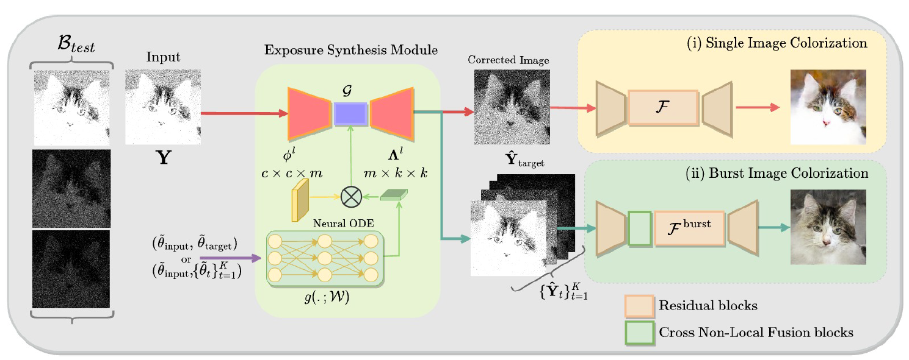Exposure Correction Results
Input
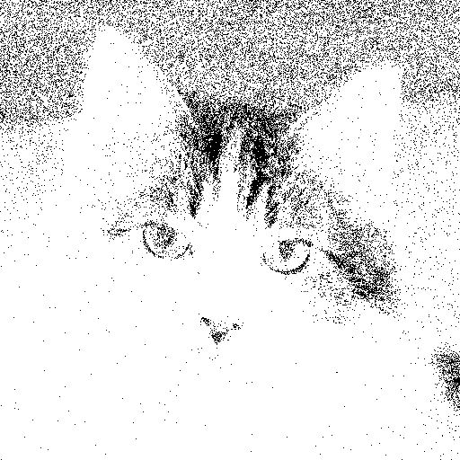\(\widetilde\theta_\text{1}\)
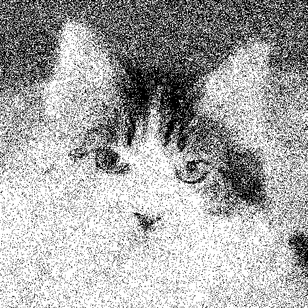\(\widetilde\theta_\text{3}\)
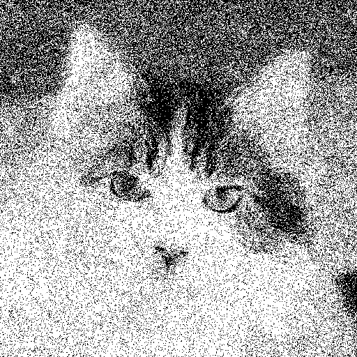\(\widetilde\theta_\text{5}\)
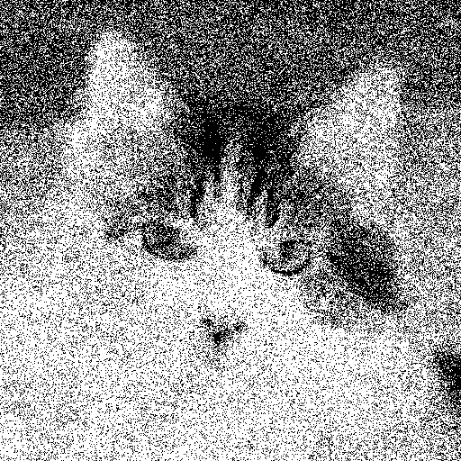\(\widetilde\theta_\text{7}\)
\(\widetilde\theta_\text{9}\)

\(\widetilde\theta_\text{11}\)
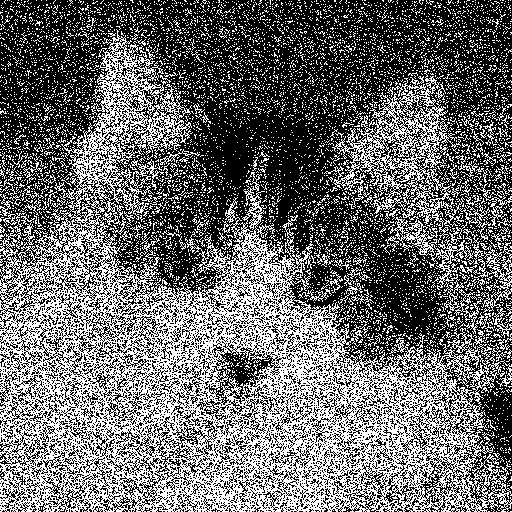\(\widetilde\theta_\text{13}\)
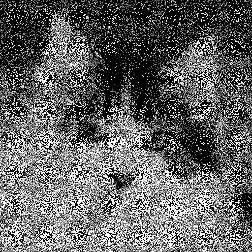
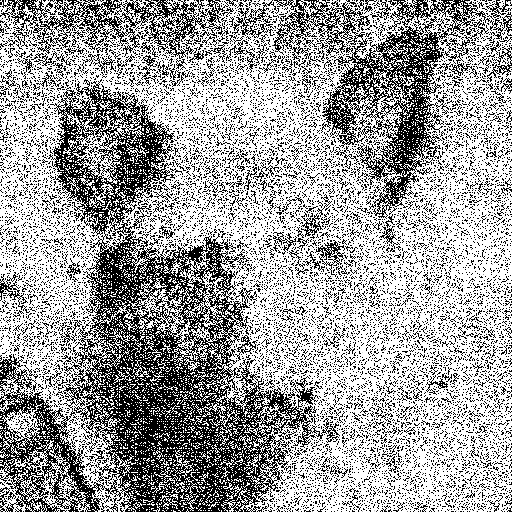
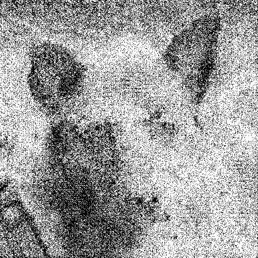
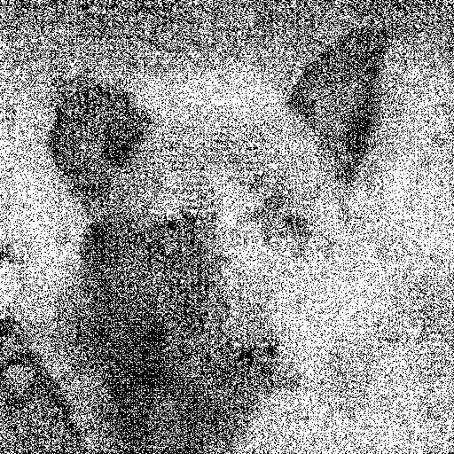
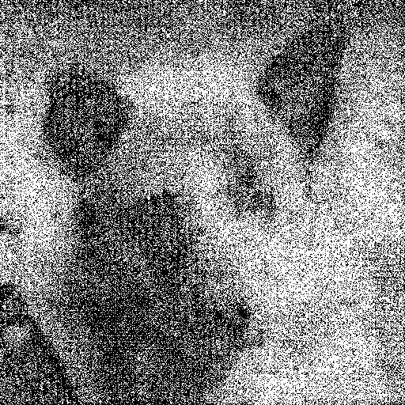

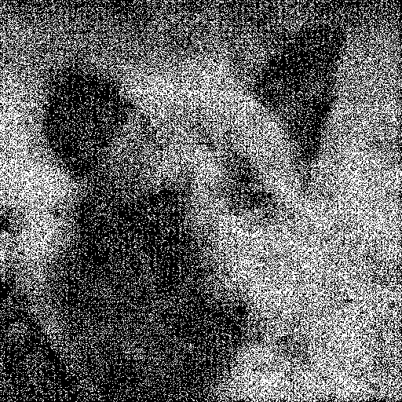
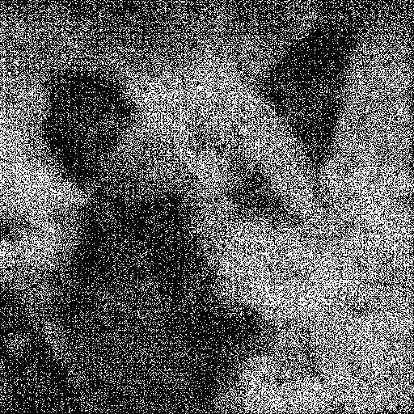
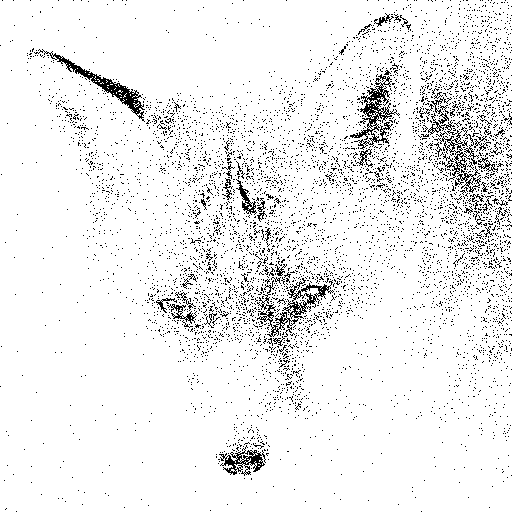
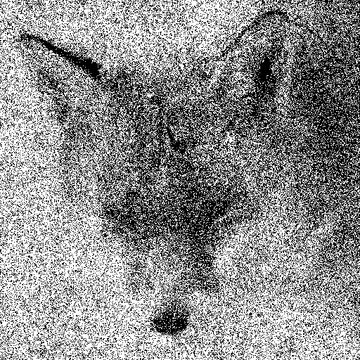
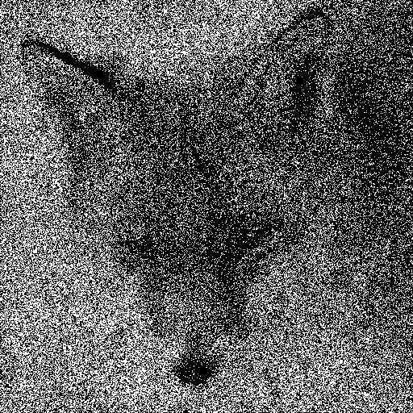
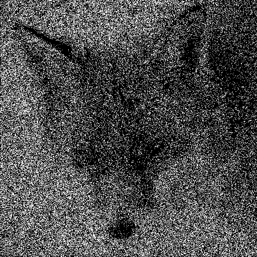
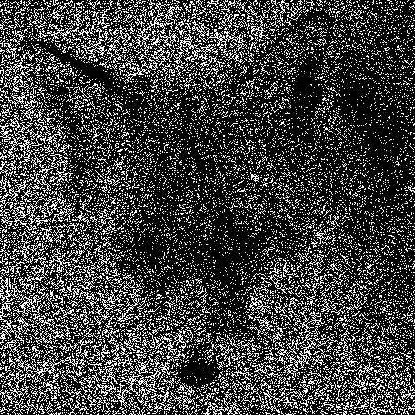

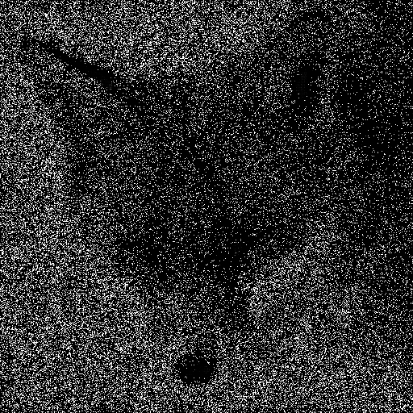

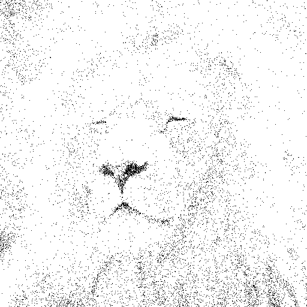
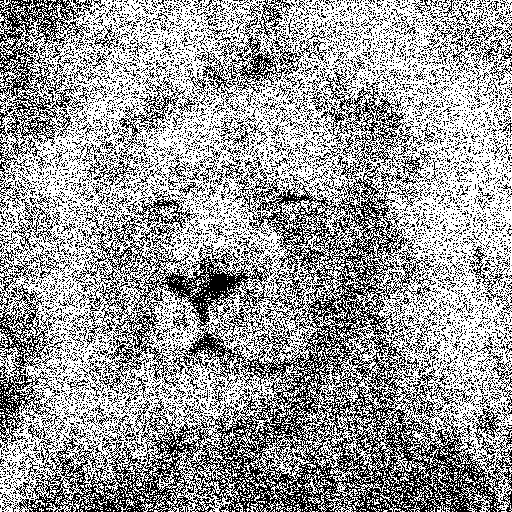
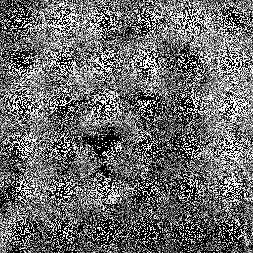
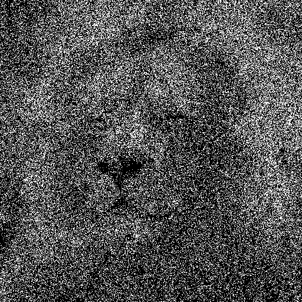
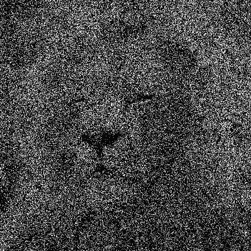
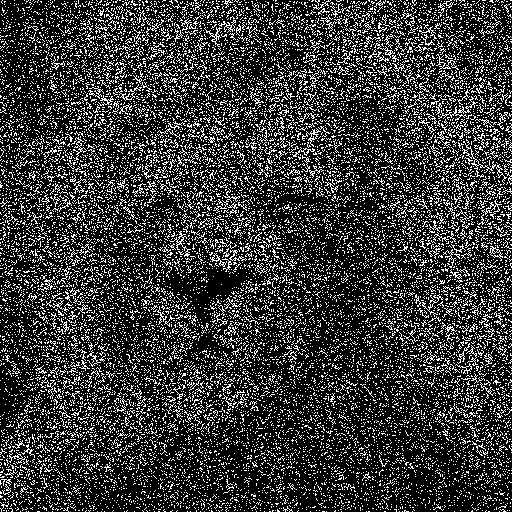
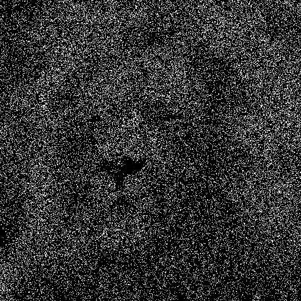
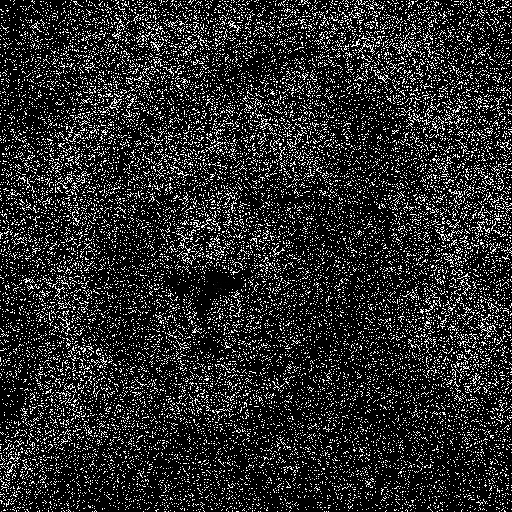
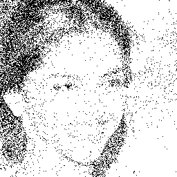
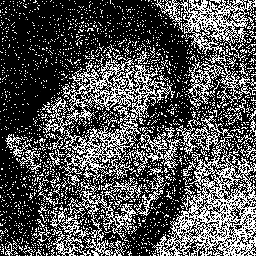
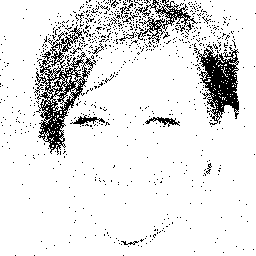
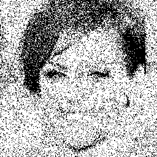
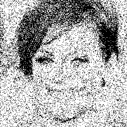

Colorization Results
Colorized
Results
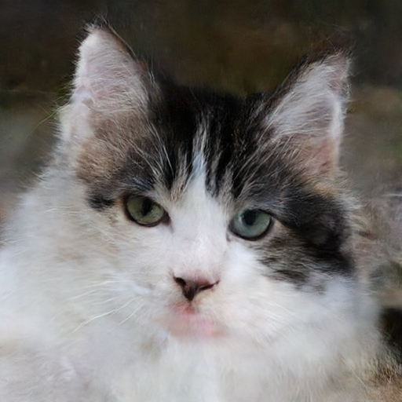
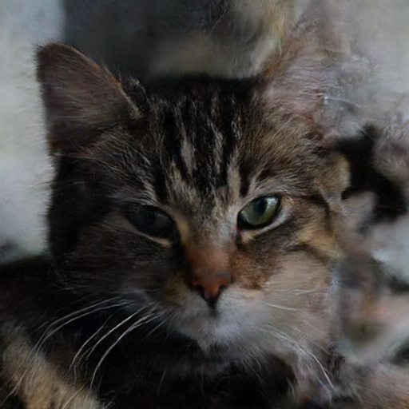

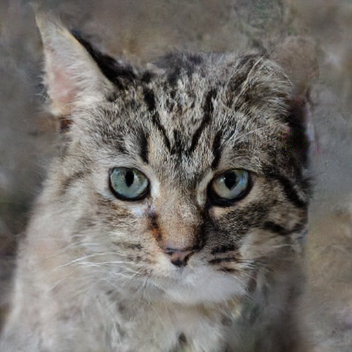
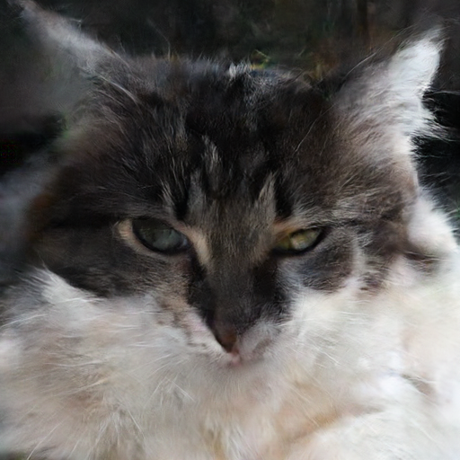
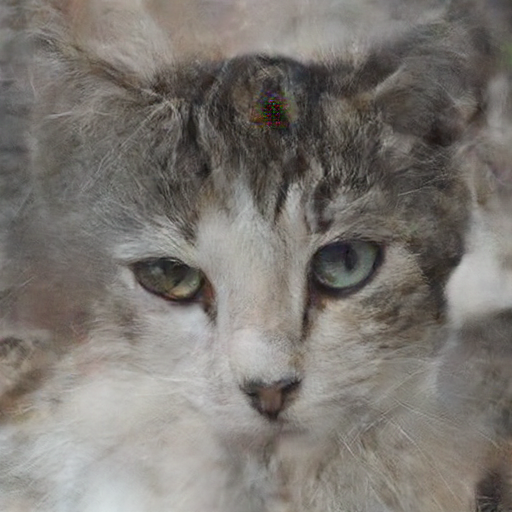
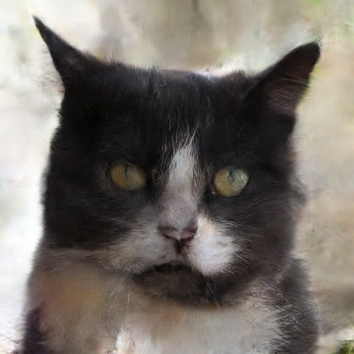

Groundtruth


Burst Image Colorization Results


Colorization Results on Real World Data
BibTeX
@inproceedings{purohitquantacolor2024,
author = {Vishal Purohit, Junjie Luo, Yiheng Chi, Qi Guo, Stanley H. Chan, Qiang Qiu},
title = {Generative Quanta Color Imaging},
year = {2024},
booktitle = {CVPR},
}